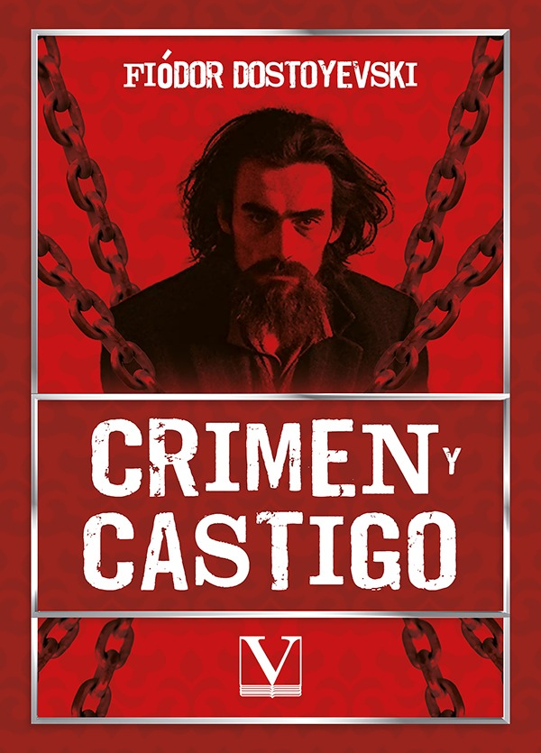
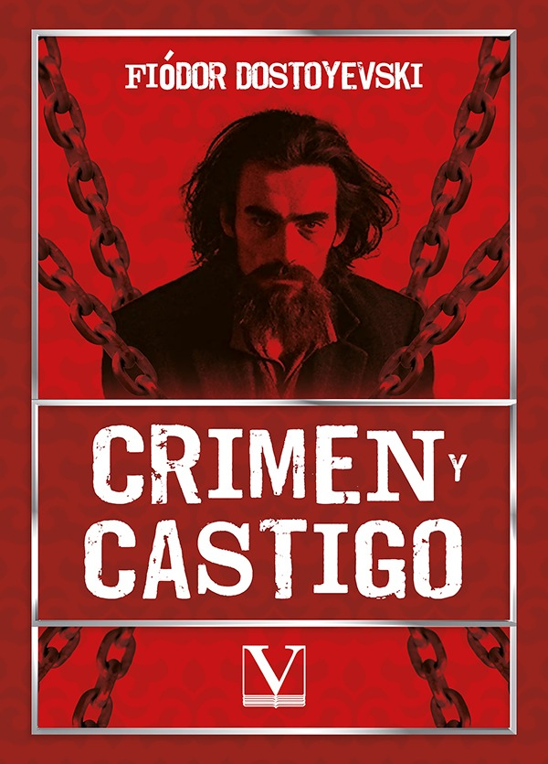
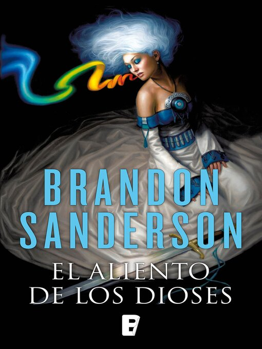
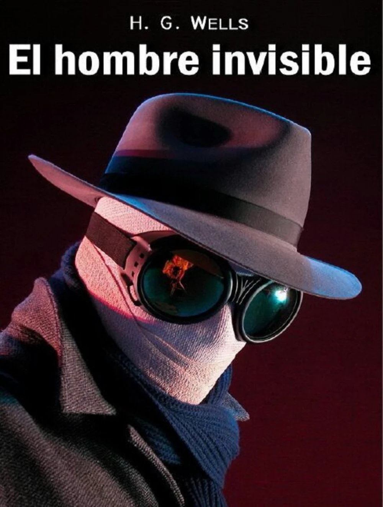

Crimen y Castigo
Autor: Fiódor Dostoyevski
Resumen: Novela psicológica que sigue la historia de Rodión Raskólnikov, un estudiante que comete un asesinato y debe enfrentar las consecuencias morales y psicológicas de sus acciones.
Mi nombre es Miguel Antonio Arosemena Delgado. Tengo 20 años y actualmente me encuentro estudiando en la Universidad Tecnológica de Panamá.
Formo parte de la facultad de sistemas de la UTP, en donde estoy estudiando la carrera de Ingeniería de Software cursando tercer año. La elegí principalmente porque me interesa bastante dos cosas fundamentales de esta: la creación de apps y las matemáticas.

Visita mi sitio web favorito: https://www.manutd.com/
Autor: Fiódor Dostoyevski
Resumen: Novela psicológica que sigue la historia de Rodión Raskólnikov, un estudiante que comete un asesinato y debe enfrentar las consecuencias morales y psicológicas de sus acciones.
Autor: Brandon Sanderson
Resumen: Cuarta entrega de la saga "El Archivo de las Tormentas", donde Kaladin y Shallan continúan sus aventuras en un mundo de tormentas mágicas y conflictos políticos.
Autor: Franz Kafka
Resumen: Relato surrealista sobre Gregorio Samsa, quien una mañana despierta transformado en un insecto gigante, explorando temas de alienación y absurdidad de la existencia.
Autor: Brandon Sanderson
Resumen: Historia ambientada en el mundo de Nalthis, donde las personas pueden devolver objetos inanimados a la vida mediante el uso de BioChroma, una energía mágica basada en colores.
Autor: H.G. Wells
Resumen: Ciencia ficción sobre un científico que descubre cómo volverse invisible pero no puede revertir el proceso, llevándolo a la locura y el conflicto con la sociedad.
Director: Stanley Kubrick
Protagonistas: Jack Torrance, Wendy Torrance, Danny Torrance
Director: Peter Weir
Protagonistas: Trauman Burbank, Christof, Marlon
Director: Christopher Nolan
Protagonistas: Cillian Murphy, Emily Blunt, Matt Damon
Director: Guillermo del toro
Protagonistas: Elisa Esposito, Zelda Fuller, Giles
Director:George A. Romero
Protagonistas: Ben, Barbara, Judy
Director:Jonathan Demme
Protagonistas: Hannibal, Clarice Starling, Jame Gumb
Director:M. Night Shyamalan
Protagonistas: Cole Sear, Dr. Malcom Crowe, Lynn Sear
Director:David Fincher
Protagonistas: Tyler Durden, Marla Singer, Ricky
Director:Ridley Scott
Protagonistas: Dallas, Lambert, Ellen Ripley
Director:Tomas Alfredson
Protagonistas: Abby, Owen Kenny
| Nombre de la canción | Género | Cantante/Grupo | Álbum | Año |
|---|---|---|---|---|
| Piano Man | Pop | Billy Joel | Piano man | 1973 |
| Strangers in the Night | Jazz Vocal | Frank Sinatra | Strangers in the Night | 1966 |
| Good Old-Fashioned Lover Boy | Glam Rock | Queen | A Day at the Races | 1976 |